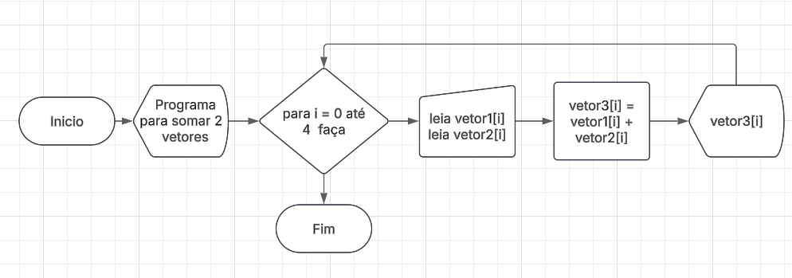
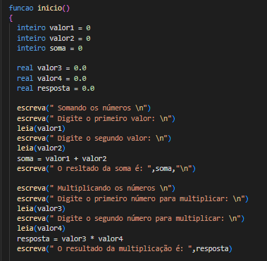
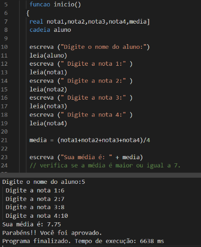

Lógica Computacional
1. O que são Fluxogramas? Qual a sua simbologia básica?
Fluxogramas são representações gráficas de processos, algoritmos ou fluxos de trabalho. Utilizam símbolos padronizados para mostrar a sequência de passos e decisões de forma visual e intuitiva.
Simbologia Básica:

2. O que são Algoritmos? Onde são usados?
Algoritmos são sequências finitas e ordenadas de instruções ou passos lógicos que resolvem um problema específico ou executam uma tarefa. São a base da programação e do pensamento computacional.
Características dos Algoritmos:
Finitude: Deve ter um início e um fim definidos
Definição: Cada passo deve ser claro e sem ambiguidades
Entrada: Recebe zero ou mais dados de entrada
Saída: Produz pelo menos um resultado
Efetividade: As operações devem ser executáveis
Onde são usados?
Sistemas Operacionais: Gerenciamento de processos e memória
Aplicativos: Redes sociais, jogos, editores de texto
Inteligência Artificial: Machine learning, reconhecimento de padrões
Bancos de Dados: Consultas, ordenação e busca de dados
Criptografia: Segurança de dados e comunicações
Ciência de Dados: Análise estatística e visualização
Automação: Robótica, IoT, sistemas embarcados
3. O que é o Portugol? O que é o Portugol Studio?
Portugol é uma pseudolinguagem de programação que utiliza o português para escrever algoritmos. Foi criada para facilitar o aprendizado de lógica de programação, permitindo que estudantes se concentrem nos conceitos fundamentais sem precisar dominar a sintaxe de linguagens formais como C, Java ou Python.
Portugol Studio
O Portugol Studio é um ambiente de desenvolvimento integrado (IDE) gratuito e em português que permite escrever, testar e executar programas em Portugol. Possui recursos como:
Editor de código com destaque de sintaxe
Depurador para encontrar erros
Console para exibir resultados
Biblioteca de exemplos
Interface intuitiva para iniciantes

4. O que são Variáveis e Constantes?
Variáveis
Variáveis são espaços na memória do computador que armazenam dados que podem ser modificados durante a execução do programa. Cada variável possui:
Nome: Identificador único (ex: idade, nome, salario)
Tipo: Define que tipo de dado pode armazenar (inteiro, texto, etc.)
Valor: O dado atual armazenado
Exemplo: inteiro idade = 25 (o valor pode mudar para 26, 27, etc.)
Constantes
Constantes são semelhantes às variáveis, mas seus valores são fixos e não podem ser alterados após a inicialização. São úteis para valores que permanecem os mesmos durante todo o programa.
Exemplo: const real PI = 3.14159 (o valor de PI nunca muda)
Diferenças principais:
Variável: Valor pode ser alterado → MUTÁVEL
Constante: Valor é fixo → IMUTÁVEL
5. Quais os Tipos de Dados mais usados em Algoritmos (Portugol)?
Tipos Primitivos:
1. Inteiro
Armazena números inteiros (positivos ou negativos)
Exemplos: -10, 0, 42, 1000
Uso: contadores, idades, quantidades
2. Real
Armazena números decimais (ponto flutuante)
Exemplos: 3.14, -0.5, 98.6, 1000.99
Uso: preços, médias, medidas precisas
3. Caracter
Armazena um único caractere
Exemplos: 'A', 'z', '5', '@'
Uso: iniciais, símbolos, caracteres isolados
4. Cadeia (String)
Armazena textos (sequência de caracteres)
Exemplos: "João", "Olá, Mundo!", "Rua das Flores, 123"
Uso: nomes, endereços, mensagens
5. Lógico (Booleano)
Armazena apenas dois valores: VERDADEIRO ou FALSO
p>Exemplos: verdadeiro, falsoUso: condições, flags, estados
Tipo Composto:
6. Vetor (Array)
Estrutura que armazena múltiplos valores do mesmo tipo
Acesso por índice (posição)
Exemplo: inteiro notas[5] = {8, 7, 9, 6, 10}
Uso: listas, conjuntos de dados, coleções
6. Exemplos de Programas em Portugol usando Funções
Exemplo 1: Calculadora Simples

Exemplo 2: Verificador de Paridade

Exemplo 3: Conversor de Temperatura

7. Exemplos de Programas em Portugol usando Vetores
Exemplo 1: Média de Notas

Exemplo 2: Maior e Menor Valor

Exemplo 3: Contador de Números Pares